This is an improvement on the latest version of the Vprofile project. Looking for a more flexible and reliable infrastructure and with no upfront payment (Pay as you Go), AWS seems to be the perfect solution.
To accomplish this, I used the “lift and shift” way to migrate the application to AWS Cloud, with fewer changes as possible.
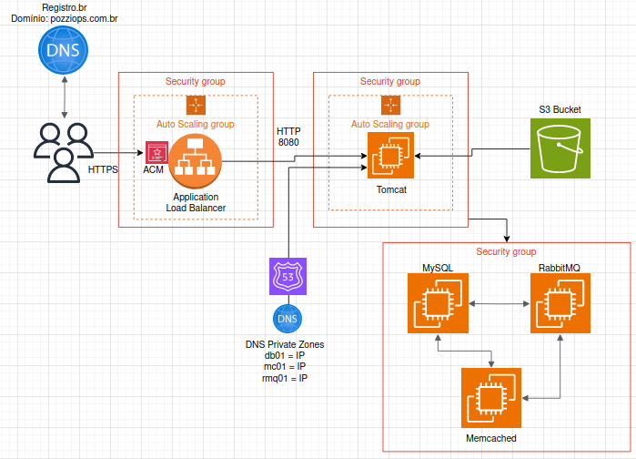
Using good practice, I started off by setting up the Security Groups (SGs), Certificate Manager first. Then placed the backend, which is composed by MySQL, Memcached, and RabbitMQ into an EC2 Cluster. After that, was the EC2 instance with Tomcat and then the load balancer. Below, I'll show how this was made.
Two SGs: One for the ELB allowing all traffic, another for the Tomcat app, allowing only the ELB on port 8080.
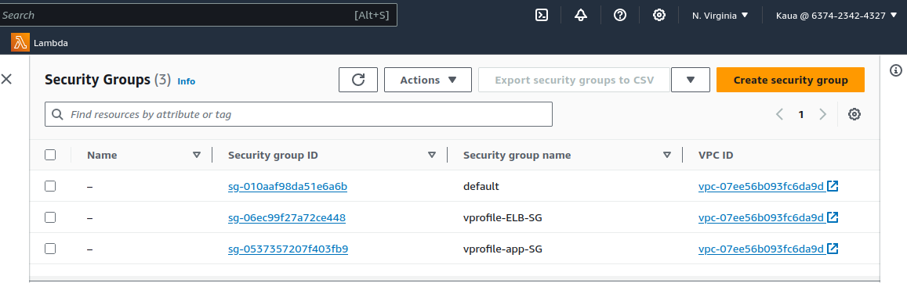
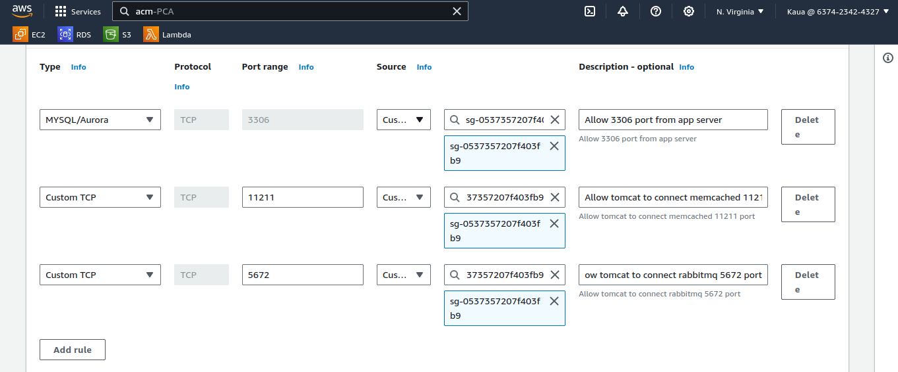
After it, the backend services: Ec2 Instances
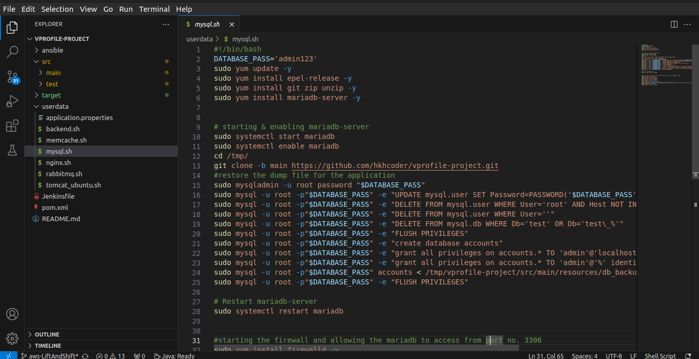
SSH into db01 instance - just to check if its ok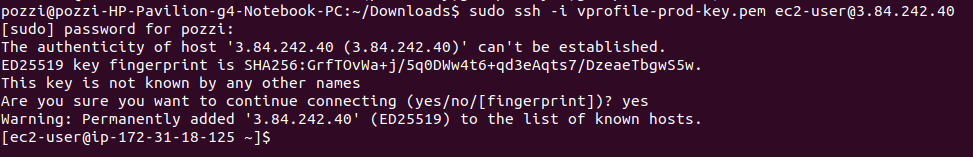
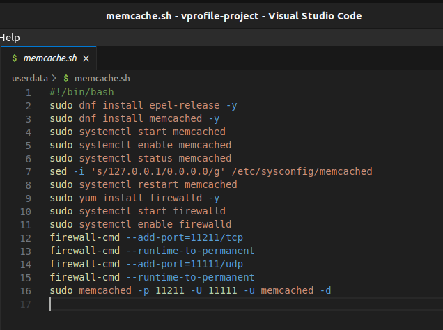
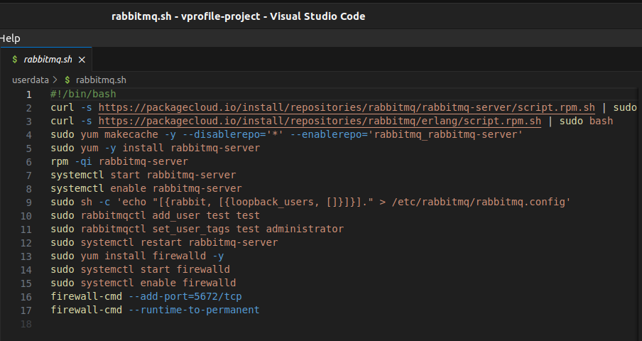
And then the app server:
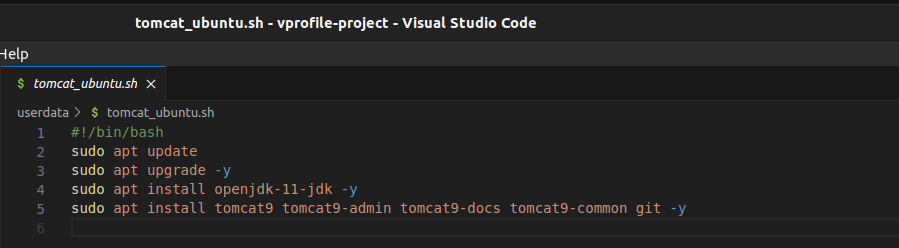
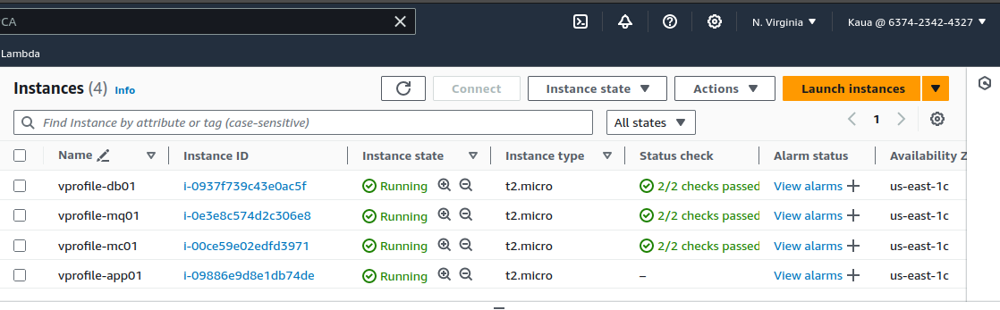
[App Layer] Creating the S3 Bucket via CLI
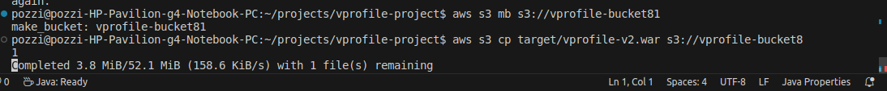
Build Artifact with Maven
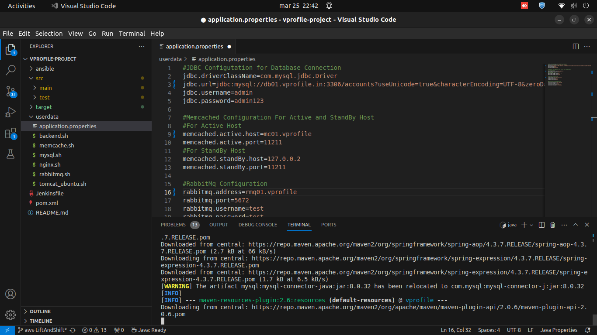
Put it on a S3 bucket and then fetch to EC2 instances
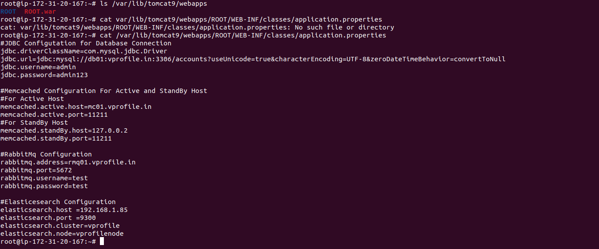
[App Layer] Application Load Balancer
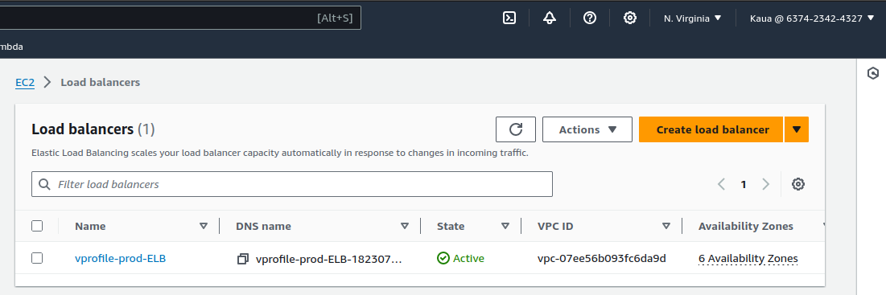
For the ASG it was necessary to create an AMI first, then setup a launch template, registering the proper roles and key pair for access. This is needed, because when the ASG notes that a new instance is going to be created, it will make it with the AMI.
Creating Security GroupsThe main objective here is to set up configuration rules, so the services are correctly pointed to one another, and every port is in the right place. For this were created 3 security groups: one for the load balancer, one for the application instance (tomcat) allowing the ELB, and another for the backend instances (rabbitmq, memcached, mysql) allowing access from the app ELB, and from the services within its own security group.
SSH access were created on both app and backend, on port 22.
Hosted zones with Route 53 (Private IP)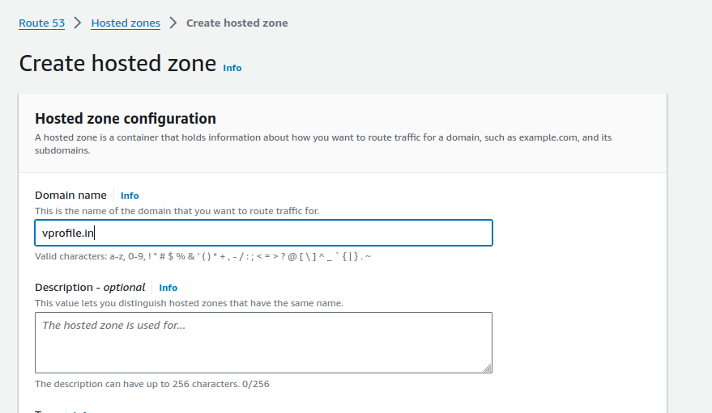
ELB Configuration HTTPS (Port 443)
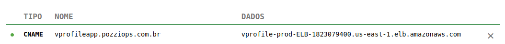
Checking if DNS Name works
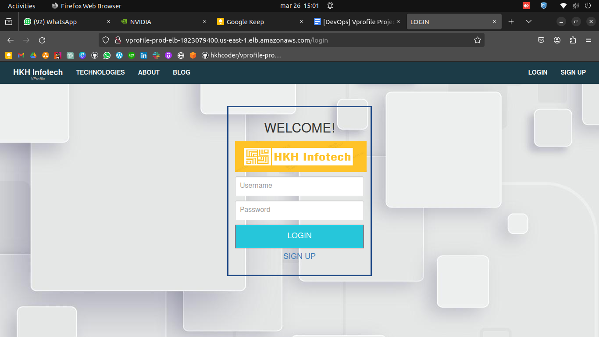
Load Balancer and AUTO SCALING Configuration
AMI
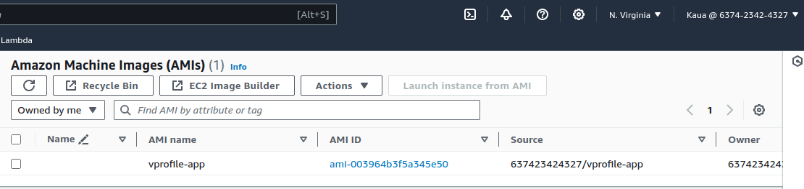
Launch Template
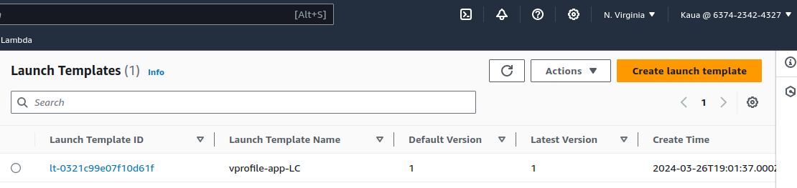
Scaling Group
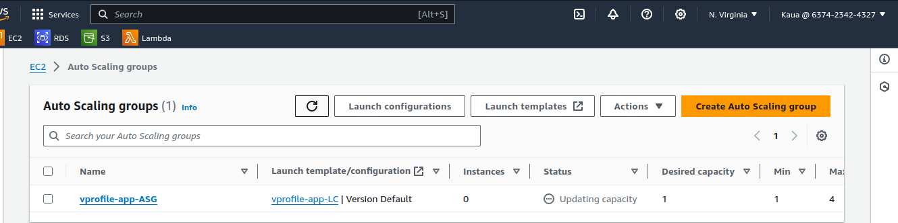
The applications dependencies were all received from the developers from this repository:
https://github.com/hkhcoder/vprofile-project
After everything set up, I used my own domain, with the Certificate Manager to access the application through the public internet (http: 80 / https: 443). The application was programmed for this particular project, so we could test the Memcached and MySQL, to check if it runs properly.
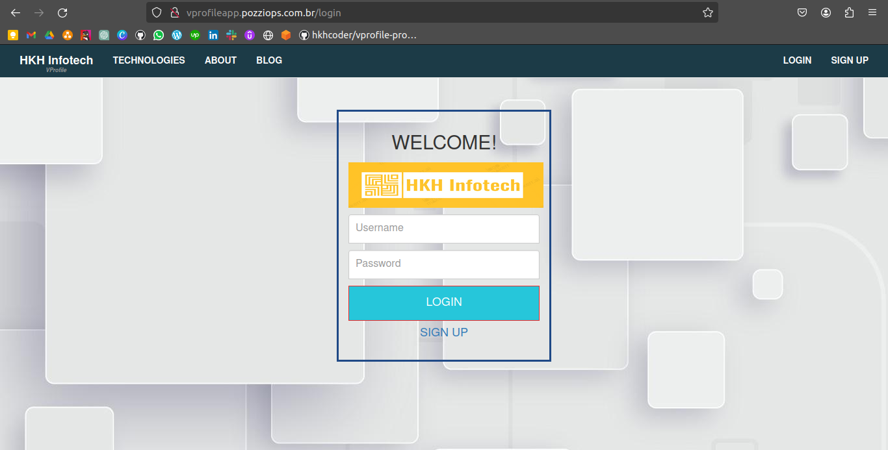
One of the mistakes I've been through this project was the domain, CNAME configuration, as Registro.br is not properly designed to make this particular kind of execution. I had to make some mistakes, and tests, until I could access the app through the domain.
I would love to know how i can help.